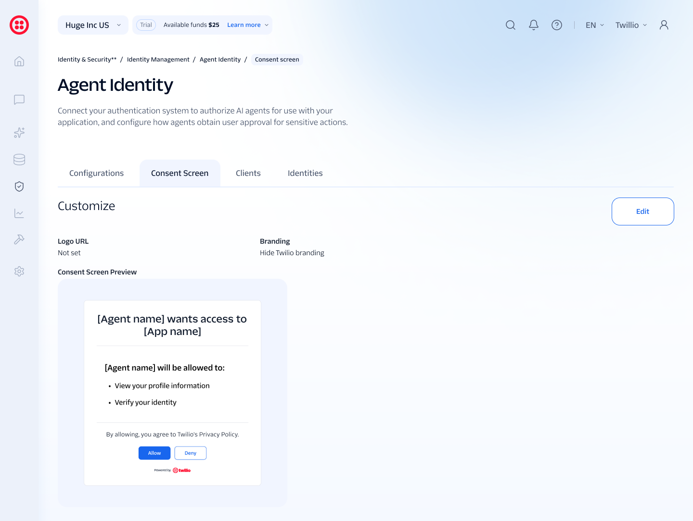

Setting up identity for a new kind of actor — the AI agent.

Fig. 01 — the consent screen an end user sees before an agent can act on their behalf.
Agent Identity is pre-launch — currently in testing with 5 design partners ahead of a private beta in Fall 2026. Rather than invent outcomes that don't exist yet, here's what that testing is actually working to answer: